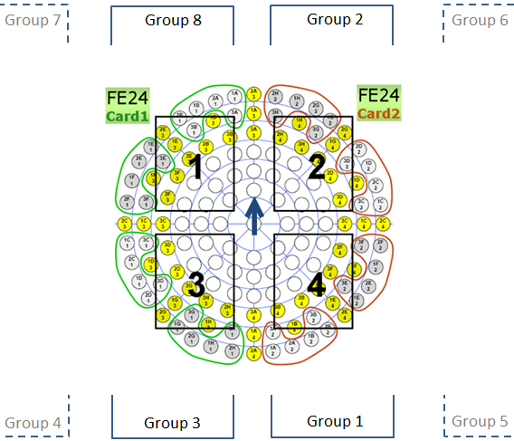
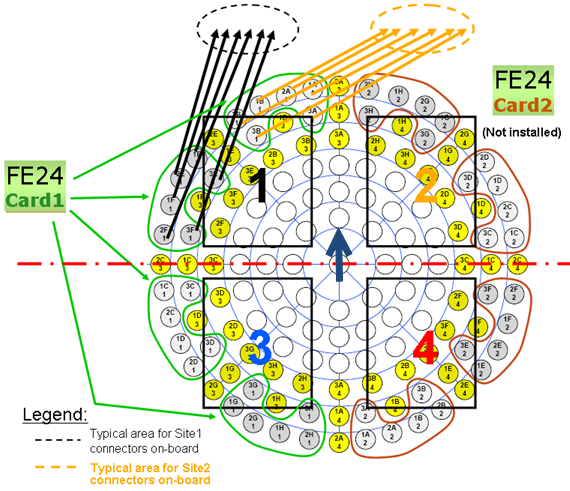
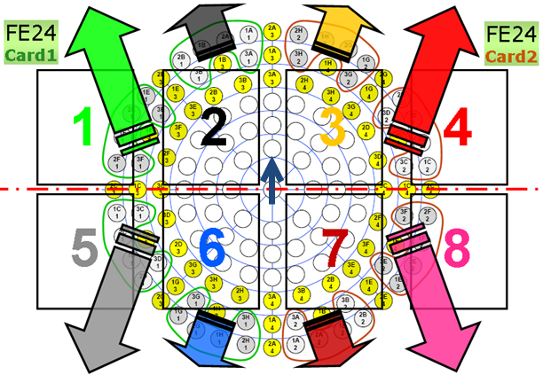
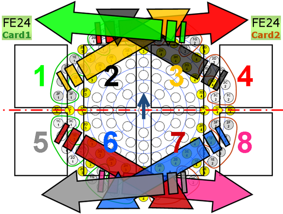

Cable routing strategies
Designing the cable routing plan for an RF DUT board requires consideration of:
- Number of sites required
- Arrangement of sites (handler is in-line or matrix)
- Number of available Port Scale cards in the configuration
- Number of Tx (sourced) and Rx (measured) ports
- Location and orientation of RF ports in the PSRF segmented bridge adapter
- Grouping of cables for robust routing and mechanical integrity
- Bundling and harnessing of grouped cables
- Use of straight or right-angle connectors on each cable group, respectively
- Cable length and movement of cables between open and closed position of the PSRF segmented bridge adapter
- Balanced mechanical pressure at all reduced operation scenarios even if Port Scale card(s) or site(s) fall out due to failure or physical removal
- Special test requirements. For example: "must be operational 8-site with 2 Port Scale FE24 cards on a large test head (LTH) and 4-site with 1 Port Scale FE24 card on a compact test head (CTH)", etc.
An optimized routing design has many individual choices handling the various parameters and requirements. The simple examples below demonstrate some preferred solutions.
Example 1: Basic routing
Task:
- Route a 4-site DUT board having a 2x2 handler configuration.
- Use one Port Scale RF (FE24) card only.
- Create "optimum" way.
Application example:
- Relatively simple device with few RF ports only
- Mostly Rx tests with no or very few Tx tests
- Using an economical configuration in CTH tester
The graphic shows the relative location of the port positions in the PSRF segmented bridge adapter versus groups (1 - 8) and sites (1 - 4) on the DUT board:

In the graphics, the FE24 cards are color coded (green = card 1, and red = card 2) for easy recognition.
The blue arrow in the center indicates the direction of the arrow marked on the base plate with the view looking into the tester.
Routing goals and expected advantages:
- Cables for upper/lower two sites are routed into upper/lower half of the PSRF segmented bridge adapter, respectively
- Each 1/8th segment is dedicated to one site only
- Harnessing and bundling cables of a site is easy, as each group comes from the same segment
- Relatively easy repairing under opened PSRF segmented bridge adapter
- Minimized length of cables for each site
- Acceptable distribution of handler weight
- Good access for tuning of RF matching networks
- Well organized look and feel
Solution

The routing in the example above covers Site 1 and Site 2 only. The complete routing for Site 3 and Site 4 would be a mirror image, but follow the same base concept. Card 2 is not installed in this example.
Tip: For an optimized routing of all the other resources in a multisite layout, you must consider the orientation of the PSRF multiport connectors on the DUT board.
Example 2: Advanced routing
More complicated scenarios can be similarly designed by applying the same routing principles and goals.
Possible different or additional requirements are:
- in-line versions
- use of more than one Port Scale RF card
- 8-site or 16-site operation
- 4 Port Scale RF cards for true parallel Tx testing
Task:
- Route an 8-site DUT board having a 2x4 handler configuration.
- Use two Port Scale RF (FE24) cards.
Application example:
- Advanced device with high number of RF ports
- Fan-out style on-board RF switches
- Rx and Tx tests optimized in concurrent testing
- Using an COT-optimized configuration in STH or CTH tester
One logical solution is to create for each site the shortest possible routing distance between the socket location and the corresponding segment of the PSRF segmented bridge adapter.

However, with this solution the cable routing may require many vertical turns causing high bending forces.
Preferred solution
You must consider the required cable movement and twist along the pivot line of the PSRF segmented bridge adapter base. Therefore, the recommended cabling solution might be different:

Functional changes
- Introduced in SmarTest 6.5.3